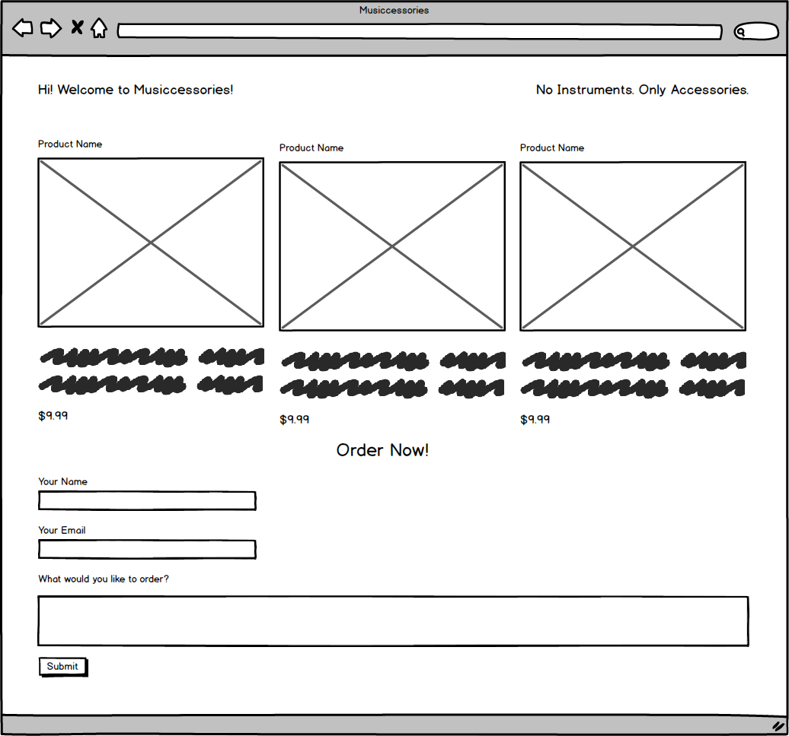

This quarter, we'll be using a free service called Netlify to publicly host our websites and applications. If you haven't already, please set up an account to use – you'll want to log-in with your GitHub login when initially signing up. This will allow you to automatically link your GitHub repositories to your public Netlify apps.
Creating a new Netlify app is straightforward; simply log-in to your Netlify account and select "New site from Git". Follow the prompts to connect to your GitHub account and select a repository to deploy. The GitHub repository we connect to must have a index.html in the root of its directory structure.
Netlify has built-in functionality to accept form data. When your site is hosted on Netlify, we simply need to add a netlify attribute to our form tags for this to work. Essentially, this attribute triggers a little bit of JavaScript on Netlify's end, in order to automatically add the form's action when submitting the form. Note that this only works on the publicly available site that's hosted on Netlify – not the development version that lives on your computer. Here's a quick example:
<form netlify>
<label class="block mt-4 font-bold" for="name">What is your name?</label>
<input class="p-2 w-64 border border-gray-400 rounded shadow-xl focus:outline-none focus:ring-purple-500
focus:border-purple-500" type="text" id="name" name="name">
<label class="block mt-4 font-bold" for="favorite-color">What is your favorite
color?</label>
<input class="p-2 w-64 border border-gray-400 rounded shadow-xl focus:outline-none focus:ring-purple-500
focus:border-purple-500" type="text" id="favorite-color" name="favoriteColor">
<button class="block mt-4 text-white bg-purple-500 rounded px-4 py-2">Submit form!</button>
</form>
